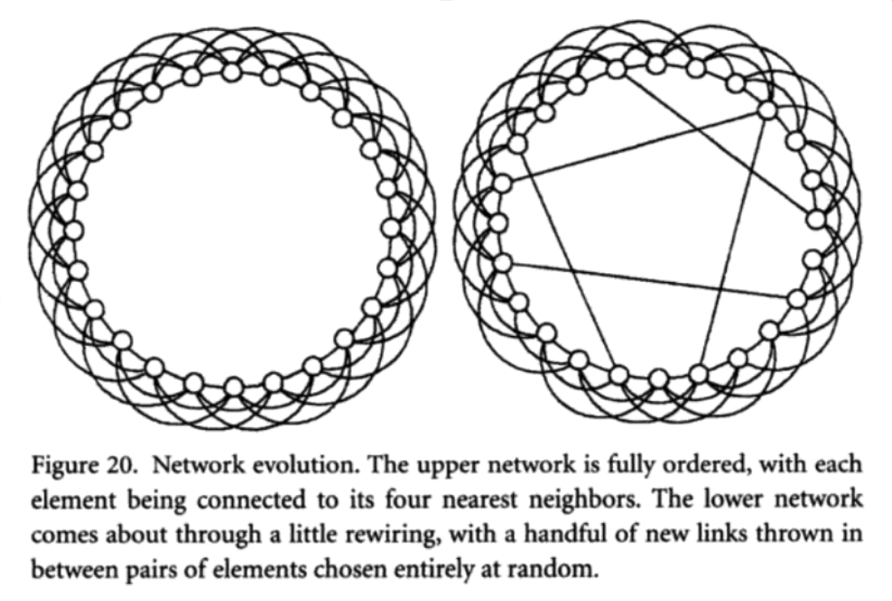
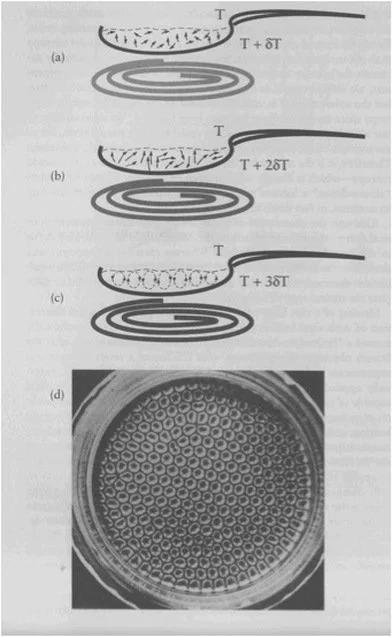
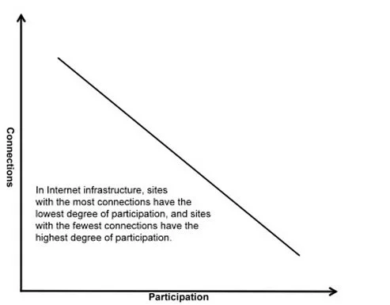

A nonlinear network is a mathematical pattern of self-organizing systems. Because nonlinear networks are mathematical, our observation of them will not deal with substance, rather their shared qualities between nonlinear networks, which will bring us to a deeper understanding of the self-organizing process.
First we will look at how nonlinear networks are made of order and randomness simultaneously. Then we will explore how there is an uneven power law distribution that applies to all networks universally. And the observation of this universal quality will bring us to the universality of behavior of all nonlinear networks, allowing for the familiarity of one nonlinear network to grant access to knowledge of all others at scale.
Order and randomness
Nonlinear networks are made of a combination of order and randomness. A natural example of the combination of order and randomness can be observed in the human heart. If the rhythm of our heart was strictly orderly and invariable, the heart muscle would get tired after so many beats (around two-three billion beats in an average lifetime). A little bit of randomness makes our heart's rhythm erratic, having slight variations between each beat it keeps. These slight variations allow for part of the heart to rest while the whole is still performing as a system. Without this inconsistency, our heart would tire out, and our heartbeat would become unsustainable.
Order brings clustering and structural cohesiveness; and randomness makes a highly connected network with the lowest degree of separation. Randomness also makes the nonlinear network flexible enough to experience instability, giving its components the ability to function far from equilibrium: in the chaotic zone. Upon reaching a critical point, networks become fractal and a new order of greater complexity emerges simultaneously. All the components of the network synchronize their assets to create a whole that is greater than the sum of its parts. This creative and cognitive process is constantly occurring throughout our world and universe.
Nonlinear networks are highly connected and therefore able to transfer and process information at a high rate of efficiency. All nonlinear networks have emerging and flexible structures that permit the transference of information over a multitude of interconnected routes.

An example of highly connected order emerging from randomness can be seen when water is heated. In the diagram below you'll see how the water molecules at the bottom of the container (if the heat source is at the base, as it is on a stovetop or hotplate) start moving upward randomly in different directions. The more heat they receive, the more chaotic their upward movement becomes. Upon reaching a critical point, a new order suddenly emerges in which each water molecule joins one of the many three-dimensional hexagons as shown in the diagram below:

Molecules at the bottom travel vertically to the top and then move down the sides of the hexagons. They move in such an orderly fashion that it seems as if they could all be aware of each other. In the context of order, chaos, and synchronization within nonlinear networks, new order emerges when all the elements within a given system synchronize. Their cooperation creates a synergetic relationship among them, elevating the quality and functionality of the network as a whole which is capable of performing at a higher level than the sum of its individual parts. We have all experienced this holistic, cooperative effect among large gatherings of people at concerts, games, political demonstrations, or religious events. Steven Strogatz explains this concept further in his book Sync: The Emerging Science of Spontaneous Order (2003):
At the heart of the universe is a steady, insistent beat: the sound of cycles in sync. It pervades nature at every scale from the nucleus to the cosmos. Every night along the tidal rivers of Malaysia, thousands of fireflies congregate in the mangroves and flash in unison, without any leader or cue from the environment. Trillions of electrons march in lockstep in a superconductor, enabling electricity to flow through it with zero resistance. In the solar system, gravitational synchrony can eject huge boulders out of the asteroid belt and toward Earth; the cataclysmic impact of one such meteor is thought to have killed the dinosaurs. Even our bodies are symphonies of rhythm, kept alive by the relentless, coordinated firing of thousands of pacemaker cells in our hearts. And that raises a profound mystery: scientists have long been baffled by the existence of spontaneous order in the universe. The law of thermodynamics seems to dictate the opposite, that nature should inexorably degenerate toward a state of greater disorder, greater entropy. Yet all around us we see magnificent structure-galaxies, cells, ecosystems, human beings, that have somehow managed to assemble themselves. This enigma bedevils all of science today. The tendency to synchronize is one of the most pervasive drives in the universe, extending from atoms to animals, from people to planets. All the examples are variations on the same mathematical theme: self-organization, the spontaneous emergence of order out of chaos.
One of the best modern examples of the whole being greater than the sum of its parts is the function of light in the form of a laser. The intense, coherent, needle-thin beam of light is a result of trillions of atoms emitting light waves in sync with one another. The atoms themselves are no different from those in an ordinary light bulb; the trick is the way they cooperate as a group. Instead of a cacophonous light of different colors and phases, laser light is one color and one phase—a choir singing the same note. The resulting laser is composed of the atoms which collectively create a beam that is more than what the atoms are capable of individually. The integrative, synchronized, and emergent behavior of the components results in the holistic, cooperative, and qualitative characteristic of nonlinear networks. The synergistic character of nonlinear systems is also what makes them such rich subjects worthy of focused exploration. Every major unsolved problem in science, from consciousness to cancer to the unpredictability of the economy, can be better understood with a nonlinear approach. As is evident in a laser, the synchronized whole has a quality and functionality which none of the individual components had on their own.
Nonlinear networks have an uneven power law distribution
The distribution of components in nonlinear networks follows an uneven power law distribution. For instance, the Sun is composed of 71 percent hydrogen and 27 percent helium. The remaining two percent is composed of a variety of elements that are not equally distributed. Oxygen is the most abundant of that two percent (at 42.9 percent), followed by carbon (17.7 percent), and iron (9.7 percent). Various metals make up the tiny remainder of that two percent. This uneven and scale-free type of distribution is called a power law distribution. It is one of the most universal characteristics of nonlinear networks.
Within a nonlinear network such as the internet, websites with the most connections have the lowest degree of participation, and the sites that exhibit the highest degree of participation have the fewest links or connections. Take for example Google, Amazon, or other large websites: there are only a few of them participating at that level, so they have the most connection with other websites. Because those few large sites have so many connections, they have more power within the network and their effectiveness to reach other websites within the network is that much stronger. These are the hubs of the network, and they are crucial in supporting the stability and robustness of the whole network. But those sites that have the highest degree of participation, such as the millions of small personal websites, have the fewest connections. In nonlinear networks, the members with higher connectivity in the network have more power and more control over the whole network.

The power law distribution principle applies to all nonlinear networks, including networks within the body that regulate our blood circulation and nervous system, and the networks throughout the rest of our natural world. (1)
Nonlinear networks display self-similarity and universality
Fractals are created by the repetition of basic operational rules, and this signifies a deep simplicity at the core of the creation of this complex universe. Self-similarity is a powerful property of nonlinear systems. Duncan J. Watts connects this self-similarity to the principle of universality in his Six Degrees: The Science of a Connected Age (2003) as follows:
The observation that very different systems can exhibit fundamental similarities is generally referred to as universality, and its apparent validity presents one of the deepest and most powerful mysteries in modern physics. It is mysterious because there is no obvious reason why systems as different as superconductors, ferromagnets, freezing liquids, and underground oil reservoirs should have anything in common at all. And it is powerful precisely because they do have something in common, which tells us that at least some of the properties of extremely complicated systems can be understood without knowing anything about their detailed structure or governing rules.
There is no proportionality between cause and effect
Pulling further from Strogatz's Sync: The Emerging Science of Spontaneous Order:
Linear equations describe simple, idealized situations where causes are proportional to effects, and forces are proportional to responses. Linear equations are tractable because they are modular: they can be broken into pieces. Each piece can be analyzed separately and solved, and finally all the separate answers can be recombined—literally added back together—to give the right answer to the problem.
In a linear system, the whole is exactly equal to the sum of the parts. But linearity is often an approximation of a more complicated reality. Most systems behave linearly only when they are close to equilibrium, and only when we don't push them too hard.
Since nonlinear systems perform far from equilibrium, cause and effect are not proportional. In a nonlinear system, small changes may have dramatic effects because they may be amplified by self-regulating feedback loops. In highly connected nonlinear networks, sometimes small changes can have major implications, while at other times even major changes can be absorbed with remarkably little disruption.
When we observe the real world from a nonlinear perspective, we see examples all around us in which cause and effect are not proportional. The behavior of water illustrates this principle of network theory. Water has one exceptional property when compared to any other liquid: when it freezes, its volume increases and its density decreases. This ability to gain volume while transitioning between liquid and solid makes ice lighter than water. This is why ice floats on top of liquid water. Scientists believe that because of this property, during the early ice ages, ice on the top of the oceans protected the water underneath from volatile, unlivable conditions on the surface while being thin enough to allow some sunlight through, thus enabling the early phases of microbiological development to survive. Without this exceptional property of water, we would not exist to know about it; human life was made possible by one seemingly insignificant property of water.
In his book The Web of Life (1997), Fritjof Capra contextualizes the power law distribution within fractal mathematics:
In nonlinear systems, small changes may have dramatic effects because they may be amplified repeatedly by self-reinforcing feedback. Such nonlinear feedback processes are the basis of the instabilities and the sudden emergence of new forms of order that are so characteristic of self-organization. Mathematically, a feedback loop corresponds to a special kind of nonlinear process known as iteration, in which a function operates repeatedly on itself.
If we take a nonlinear function and assume initial values for constants and variables for the first round, then start applying the iteration process by repeatedly taking the resulting value and feeding it back into the system, we may see that the patterns are diverging, converging, or constant. But eventually we reach a zone where the results provide chaotic values without any traceable pattern. With the help of a computer, we can divide that chaotic zone into thousands of points and plot the obtained values. The resulting plotted values reveal self-similar fractal patterns in which any magnified part resembles the larger section from which it was taken. As we observe this process, we will notice that even though we see chaos on the surface, at deeper levels of observation the elements are creating an emerging order of self-similar patterns. If examined at different scales, they all display the same degree of order. In other words, they look the same at all scales.
We've discussed how nonlinear networks are made of order and randomness, and because they perform at the chaotic zone where there is no proportionality of cause and effect, they follow a power law distribution and they display self-similarity and universality. Next we will explore the historical development of the linear approximate model, and how this became the currently dominant model in our thinking and activities.
Footnotes:
Mark Buchanan, Nexus: Small Worlds and the Groundbreaking Science of Networks.
Steven Strogatz, Sync: The Emerging Science of Spontaneous Order.
Duncan J. Watts, Six Degrees: The Science of a Connected Age.
Fritjof Capra, The Web of Life.
Albert-László Barabási, Linked: The New Science Of Networks.